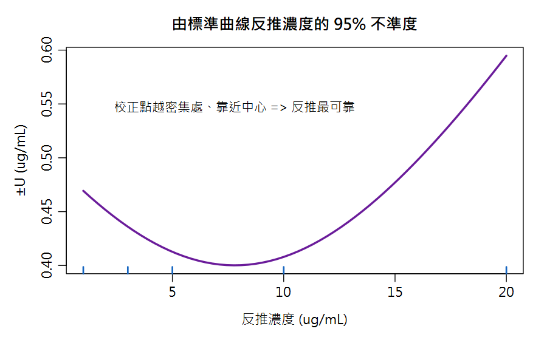

Part 3 綜合應用／第 11 章
綜合案例與期末測驗 Capstone: Crude Fibre, Calibration Uncertainty & Final Exam
為什麼粗纖維的「真值」不存在？為什麼標準曲線的不確定度在中間最小？考前最後一次把所有觀念串起來，然後用 15 題驗收。
🔑 課前暖身
期末總複習！粗纖維案例會挑戰你對「真值」的認知——有些方法的結果是「定義出來的」；
標準曲線反推則把 Ch4 的迴歸和 Ch8 的區間串成一條線。最後 15 題期末測驗見真章。
本章新詞先認識：實證方法＝結果由操作步驟定義的方法（如粗纖維）；協同試驗 sR＝多家實驗室共同驗證出來的散布。
名詞卡住了？回 Ch0 名詞圖鑑 查白話解釋與比喻。
本章新詞先認識：實證方法＝結果由操作步驟定義的方法（如粗纖維）；協同試驗 sR＝多家實驗室共同驗證出來的散布。
名詞卡住了？回 Ch0 名詞圖鑑 查白話解釋與比喻。
學習目標
- 整合應用：以協同試驗數據評估粗纖維的不確定度（QUAM Example A6）
- 進階應用：標準曲線反推濃度的不確定度（QUAM Appendix E.4）
- 通過期末測驗檢核全課程學習成效
11.1 案例④：飼料粗纖維——經驗方法與含量相關的不確定度（QUAM A6）
情境：法定方法測動物飼料粗纖維：酸煮、鹼煮、灰化、秤失重。 模型極簡：Cfibre = (b − c)/a × 100 [% m/m]（b=樣品灰化失重、c=空白失重、a=樣品重）。
📖 經驗方法的標準解法
粗纖維由方法條件定義（第 6 章）→ 不修正偏倚，直接採用協同試驗的
再現性標準差 sR 當預算主體。實驗室先以內部重複性確認「表現與協同試驗相當」才可沿用。
| 樣品 | A | B | C | D | E |
|---|---|---|---|---|---|
| 纖維含量 (% m/m) | 2.3 | 12.1 | 5.4 | 3.4 | 10.1 |
| sR（再現性 SD） | 0.293 | 0.563 | 0.390 | 0.347 | 0.575 |
| sr（重複性 SD） | 0.198 | 0.358 | 0.264 | 0.232 | 0.391 |
含量相關性：sR 隨含量上升 → 不確定度要「分含量層級」報告。 另外「乾至恆重」的失重 ±2 mg（矩形）對 1 g 樣品 = 固定 0.115% m/m 貢獻—— 低含量時不可忽略（QUAM 的判斷準則：貢獻 > sR/3 就要加進預算）。
uc = \(\sqrt{(s_R² + 0.115²)}\)
含量 2.5%：u_c = \(\sqrt{(0.292²+0.115²)}\) = 0.31 → U = 2×u_c ≈ ±0.63（25% 相對！QUAM 原文的 0.62 是先把 u_c 捨入到 0.31 才乘 2；用未捨入的 u_c 直接乘 2 則是 0.63，兩者只差在捨入的時機）
含量 5%：U = ±0.8（16%） 含量 10%：U = ±1.2（12%）——QUAM Table A6.4/A6.5
含量 5%：U = ±0.8（16%） 含量 10%：U = ±1.2（12%）——QUAM Table A6.4/A6.5
11.2 案例⑤：標準曲線反推濃度的不確定度（QUAM Appendix E.4）
第 4 章我們反推了未知濃度 xpred = (yobs − b)/a。 它的不確定度來自迴歸殘差與「未知點離校正中心多遠」：
var(xpred) = S²b1²
[ 1p + 1n +
(xpred − x̄)²Sxx ]
S=殘差標準差、b₁=斜率、p=未知樣品重複測定數、n=校正點數、S_xx=Σ(xᵢ−x̄)²

圖 11-1 反推濃度的 95% 不確定度隨濃度變化：校正範圍兩端最寬（藍色刻度＝校正點位置）
🎯 設計啟示
① 未知樣品測 p 次（如 3 次）直接把 1/p 項縮小
② 校正點涵蓋要寬、且未知濃度靠近校正中心（(x−x̄)² 項最小）
③ 這就是「標準曲線中段最可靠」的數學證明——呼應第 4 章的信賴帶
② 校正點涵蓋要寬、且未知濃度靠近校正中心（(x−x̄)² 項最小）
③ 這就是「標準曲線中段最可靠」的數學證明——呼應第 4 章的信賴帶
# ====== 案例④ 粗纖維 (QUAM A6) ======
sR_table <- data.frame(
sample=LETTERS[1:5],
fibre = c(2.3, 12.1, 5.4, 3.4, 10.1),
sR = c(0.293, 0.563, 0.390, 0.347, 0.575),
s_r = c(0.198, 0.358, 0.264, 0.232, 0.391))
plot(sR_table$fibre, sR_table$sR, pch=19, col="brown",
xlab="纖維含量 (%)", ylab="sR",
main="再現性隨含量上升")
abline(lm(sR ~ fibre, data=sR_table), col="red")
# 低含量樣品：sR + 乾燥固定項合成
uc25 <- sqrt(0.292^2 + 0.115^2)
round(c(uc = uc25, U_k2 = 2*uc25), 2)
#> uc U_k2
#> 0.31 0.63 (相對 25%；QUAM 原文的 0.62 是先把 uc 捨入到 0.31 才乘 2，此處用未捨入的 uc 直接乘 2 —— QUAM Table A6.4/A6.5)
# ====== 案例⑤ 標準曲線反推的不確定度 (QUAM E.4) ======
x <- c(1,3,5,10,20); y <- c(.050,.140,.242,.521,.998)
fit <- lm(y ~ x)
b1 <- coef(fit)[2]; S <- summary(fit)$sigma
n <- 5; p <- 3
xb <- mean(x); Sxx <- sum((x-xb)^2)
y_obs <- 0.555
x_pred <- (y_obs - coef(fit)[1]) / b1
u_pred <- sqrt((S^2/b1^2) * (1/p + 1/n + (x_pred-xb)^2/Sxx))
round(c(x_pred = x_pred, u = u_pred, U_k2 = 2*u_pred), 2)
#> x_pred u U_k2
#> 11.07 0.21 0.42
# 報告：Na = (11.1 ± 0.4) ug/mL (k=2)
R Console輸出 output
uc U_k2
0.31 0.63
x_pred.(Intercept) u.x U_k2.x
11.07 0.21 0.4211.3 全課程知識地圖
| 主題 | 核心工具 | 章節 |
|---|---|---|
| 描述統計 | mean / SD / CV / CI（Z、t） | Ch1–2 |
| 方法能力 | LOD、LOQ、MDL、專一性 | Ch3 |
| 日常品管 | Shewhart / CuSum 管制圖、空白、回收 | Ch3 |
| 校正 | lm()、r²、殘差、信賴帶、反推 | Ch4、11.2 |
| 數據取捨 | 有效數字、Q 檢定、Grubbs、學術倫理 | Ch5 |
| 不確定度流程 | GUM 四步驟、魚骨圖、經驗方法 | Ch6 |
| 量化成分 | Type A/B、矩形/三角/常態轉換 | Ch7 |
| 合成與報告 | Rule 1/2、U=k·uc、符合性判定 | Ch8 |
| 數值方法 | Kragten、Monte Carlo | Ch9 |
| 實戰案例 | 天平、滴定、HPLC、粗纖維、曲線 | Ch7、10、11 |
| 進階延伸 | LC-MS/MS：基質效應、SIL-IS、1/x 加權校正 | Ch12 |
📊 Excel 也會算：粗纖維與校正不確定度
📊 沒有 R 也能動手
粗纖維的 u 由「協同試驗 sR＋固定失重」合成，分含量層級報告：
相對 U：
| 含量 | sR | 合成 uc | Excel |
|---|---|---|---|
| 2.5% | 0.292 | \(\sqrt{(0.292²+0.115²)}\) | =SQRT(SUMSQ(0.292,0.115)) → 0.31 |
| 5% | 0.390 | — | =SQRT(SUMSQ(0.390,0.115)) → 0.41 |
| 10% | 0.575 | — | =SQRT(SUMSQ(0.575,0.115)) → 0.59 |
| 擴展 U (k=2) | — | — | =2*uc |
=U/含量*100 → 2.5% 時高達 25%（低含量特別不准）。
標準曲線反推的 var(xpred) 公式也可在 Excel 用 SLOPE、STEYX（殘差）、DEVSQ（Sxx）逐項算。